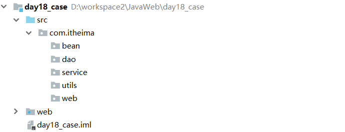

07-综合练习一. 今日目标二. 今日内容(一) 准备工作1. 数据准备2.创建项目及包结构3.引入相关jar包4. 引入页面5. 创建实体类6. 引入配置文件及工具类(二) 列表查询1. 需求分析2. 代码实现修改JSP页面web层(Servlet)业务层(Service)数据访问层(Dao)页面数据展示(三) 用户登录功能1. 需求分析2. 页面准备引入验证码程序登录页面验证码引入3. 代码实现修改JSP页面web层(servlet)业务层(service)数据访问层(dao)页面数据展示(四) 用户添加功能1. 需求分析2. 代码实现修改add.jspweb层(servlet)业务层(service)数据访问层(dao)(五) 用户删除功能1. 需求分析2. 代码实现修改list.jspweb层(servlet)业务层(service)数据访问层(dao)(六) 用户修改功能1. 需求分析用户数据回显用户数据更新2. 用户数据回显代码实现修改list.jspweb层(Servlet)业务层(service)数据访问层(dao)展示数据update.jsp3. 用户数据更新代码实现修改update.jspweb层(service)业务层(service)数据访问层(dao)(七) 删除选中功能1. 需求分析2. 代码实现修改list.jspweb层(service)业务层(service)数据访问层(dao)(八) 分页查询功能1. 需求分析分页参数与数据分页步骤分析2. 代码实现分页数据实体类web层(servelt)业务层(service)数据访问层(dao)页面展示展示数据列表展示分页条(九) 复杂条件查询功能1. 需求分析2. 代码实现页面修改list.jspweb层(service)业务层(service)接口UserService实现类UserServiceImpl数据访问层(dao)接口UserDao实现类UserDaoImpl页面展示
07-综合练习
一. 今日目标
- 完成管理员登录功能
- 完成用户添加功能
- 完成用户删除功能
- 完成用户修改功能
- 完成删除选中功能
- 完成分页查询功能
- 完成复杂条件查询功能
二. 今日内容
(一) 准备工作
1. 数据准备
xcreate database day18; -- 创建数据库use day18; -- 使用数据库create table user( -- 创建表 id int primary key auto_increment, name varchar(20) not null, gender varchar(5), age int, address varchar(32), qq varchar(20), email varchar(50), username varchar(20) unique not null, password varchar(20) not null);insert into user values (null,"郭靖","男",38,"湖北省武汉市","212223390","guojing@qq.com","guojing","123456");insert into user values (null,"黄蓉","女",28,"湖北省襄阳市","212223390","huangrong@qq.com","huangrong","123456");insert into user values (null,"黄老邪","男",58,"湖北省武汉市","212223390","huanglaoxie@qq.com","huanglaoxie","123456");insert into user values (null,"杨过","男",16,"湖北省宜昌市","212223390","yangguo@qq.com","yangguo","123456");insert into user values (null,"小龙女","男",18,"湖北省荆门市","212223390","xiaolongnv@qq.com","xiaolongnv","123456");2.创建项目及包结构

3.引入相关jar包
4. 引入页面
5. 创建实体类
xxxxxxxxxxpackage com.itheima.bean;public class User { private int id ; private String name ; private String gender; private int age ; private String address ; private String qq ; private String email; private String username; private String password; //get和set方法省略......}6. 引入配置文件及工具类
(二) 列表查询
1. 需求分析

2. 代码实现
修改JSP页面
修改==index.jsp==中的超链接 , 点击访问服务器的一个Servlet

web层(Servlet)
编写 ==UserListServlet== ,指定访问路径,接收用户请求
xxxxxxxxxx("/userListServlet")public class UserListServlet extends HttpServlet { protected void doPost(HttpServletRequest request, HttpServletResponse response) throws ServletException, IOException { //1.调用UserService完成查询 UserService service = new UserServiceImpl(); List<User> users = service.findAll(); //2.将list存入request域 request.setAttribute("users",users); //3.转发到list.jsp request.getRequestDispatcher("/list.jsp").forward(request,response); } protected void doGet(HttpServletRequest request, HttpServletResponse response) throws ServletException, IOException { this.doPost(request, response); }}业务层(Service)
接口
xxxxxxxxxx/** * 用户管理的业务接口 */public interface UserService { /** * 查询所有用户信息 * @return */ public List<User> findAll();}实现类
xxxxxxxxxxpublic class UserServiceImpl implements UserService { private UserDao dao = new UserDaoImpl(); public List<User> findAll() { //调用Dao完成查询 return dao.findAll(); }}
数据访问层(Dao)
接口
xxxxxxxxxx/** * 用户操作的DAO */public interface UserDao { public List<User> findAll();}实现类
xxxxxxxxxxpublic class UserDaoImpl implements UserDao { private JdbcTemplate template = new JdbcTemplate(JDBCUtils.getDataSource()); public List<User> findAll() { //使用JDBC操作数据库... //1.定义sql String sql = "select * from user"; List<User> users = template.query(sql, new BeanPropertyRowMapper<User>(User.class)); return users; }}
页面数据展示
修改==list.jsp==页面,使用JSTL展示数据
xxxxxxxxxx<div class="container"> <h3 style="text-align: center">用户信息列表</h3> <table border="1" class="table table-bordered table-hover"> <tr class="success"> <th>编号</th> <th>姓名</th> <th>性别</th> <th>年龄</th> <th>籍贯</th> <th>QQ</th> <th>邮箱</th> <th>操作</th> </tr> <c:forEach items="${users}" var="user" varStatus="s"> <tr> <td>${s.count}</td> <td>${user.name}</td> <td>${user.gender}</td> <td>${user.age}</td> <td>${user.address}</td> <td>${user.qq}</td> <td>${user.email}</td> <td><a class="btn btn-default btn-sm" href="update.html">修改</a> <a class="btn btn-default btn-sm" href="">删除</a></td> </tr> </c:forEach> <tr> <td colspan="8" align="center"><a class="btn btn-primary" href="add.html">添加联系人</a></td> </tr> </table></div>
(三) 用户登录功能
1. 需求分析
2. 页面准备
引入验证码程序
登录页面验证码引入
xxxxxxxxxx<script type="text/javascript">//验证码看不清换一张function refreshCode() { document.getElementById("vcode").src = "${pageContext.request.contextPath}/code?time="+new Date().getTime(); }</script>3. 代码实现
修改JSP页面
修改表单的提交路径 , 以及表单项的 name属性值与实体类属性一致
web层(servlet)
xxxxxxxxxx1. 解决请求参数中文乱码问题2. 接收用户登录参数3. 封装数据4. 完成验证码校验 4.1 校验失败,保存错误信息,转发到登录页面5. 调用业务层完成登录操作6. 根据登录结果跳转页面 6.1 登录失败,跳转登录页面,展示错误信息 6.2 登录成功,保存用户信息到session,跳转首页,展示用户信息xxxxxxxxxx("/login")public class UserLoginServelt extends HttpServlet { protected void doPost(HttpServletRequest request, HttpServletResponse response) throws ServletException, IOException { //1. 解决中文乱码问题 request.setCharacterEncoding("UTF-8"); //2. 接收用户登录参数 Map<String, String[]> params = request.getParameterMap(); //3. 封装数据 User user = new User(); try { BeanUtils.populate(user,params); } catch (Exception e) { e.printStackTrace(); } //4. 完成验证码校验 //获取用户输入的验证码 String verifycode = request.getParameter("verifycode"); //获取session中的验证码 String checkcode = (String) request.getSession().getAttribute("checkcode"); //4.1 校验失败,保存错误信息,转发到登录页面 if(verifycode==null || checkcode==null || !verifycode.equalsIgnoreCase(checkcode)){ request.setAttribute("msg","验证码输入错误"); request.getRequestDispatcher("/login.jsp").forward(request,response); return; } //5. 调用业务层完成登录操作 UserService userService = new UserServiceImpl(); User loginedUser = userService.login(user); //6. 根据登录结果跳转页面 if(loginedUser==null){ //6.1 登录失败,跳转登录页面,展示错误信息 request.setAttribute("msg","用户名或密码错误"); request.getRequestDispatcher("/login.jsp").forward(request,response); return ; } //6.2 登录成功,保存用户信息到session,跳转首页,展示用户信息 request.getSession().setAttribute("loginedUser",loginedUser); response.sendRedirect(request.getContextPath()+"/index.jsp"); } protected void doGet(HttpServletRequest request, HttpServletResponse response) throws ServletException, IOException { doPost(request, response); }}业务层(service)
接口
xxxxxxxxxx/** * 用户登录功能 * @param user 封装了用户输入的用户名和密码的用户对象 * @return 登录成功的用户对象或者null */User login(User user);实现类
xxxxxxxxxxpublic User login(User user) { return userDao.findByUsernameAndPassword(user);}数据访问层(dao)
接口
xxxxxxxxxx/** * 根据用户名或密码查询数据库 * @param user 封装了用户名和密码 * @return user对象或者null */User findByUsernameAndPassword(User user);实现类
xxxxxxxxxxpublic User findByUsernameAndPassword(User user) { //定义sql语句 String sql = "select * from user where username = ? and password = ? "; try { //根据用户名或密码进行查询 User loginedUser= template.queryForObject(sql, new BeanPropertyRowMapper<User>(User.class), user.getUsername(), user.getPassword()); return loginedUser; } catch (DataAccessException e) { e.printStackTrace(); return null; }}页面数据展示
登录失败,错误信息展示`login.jsp`
登录成功,用户信息展示
(四) 用户添加功能
1. 需求分析

2. 代码实现
修改add.jsp
注意:确定各个表单项的name属性的值与User实体的属性名称一致
web层(servlet)
xxxxxxxxxx("/user/add")public class UserAddServlet extends HttpServlet { protected void doPost(HttpServletRequest request, HttpServletResponse response) throws ServletException, IOException { //1. 解决中文乱码问题 request.setCharacterEncoding("UTF-8"); //2. 接收参数 Map<String, String[]> params = request.getParameterMap(); //3. 封装数据 User user = new User(); try { BeanUtils.populate(user,params); } catch (Exception e) { e.printStackTrace(); } //4. 调用业务层完成添加操作 UserService userService = new UserServiceImpl(); userService.addUser(user); //5. 跳转页面,用户列表页面 response.sendRedirect(request.getContextPath()+"/user/list"); }}业务层(service)
接口
xxxxxxxxxx/** * 添加联系人 * @param user 封装联系人信息 */void addUser(User user);实现类
xxxxxxxxxxpublic void addUser(User user) { userDao.add(user);}数据访问层(dao)
接口
xxxxxxxxxx/** * 添加用户 * @param user 封装用户信息的对象 */void add(User user);实现类
xxxxxxxxxxpublic void add(User user) { String sql = "insert into user values (null,?,?,?,?,?,?,?,?)"; template.update(sql,user.getName(),user.getGender(),user.getAge(),user.getAddress(),user.getQq(),user.getEmail(),user.getUsername(),user.getPassword());}(五) 用户删除功能
1. 需求分析
2. 代码实现
修改list.jsp
修改删除按钮超链接的路径 , 点击之后执行==delUser(id)==方法,传递数据的==id==作为参数
xxxxxxxxxxfunction delUser(id) { //用户安全提示 if(confirm("您确定要删除吗？")){ //访问路径 location.href="${pageContext.request.contextPath}/user/del?id="+id; }}注意 : 删除功能是根据数据的id进行删除 , 参数中一定要带有id参数 ==url?id="+id==
web层(servlet)
xxxxxxxxxx("/user/del")public class UserDelServlet extends HttpServlet { protected void doPost(HttpServletRequest request, HttpServletResponse response) throws ServletException, IOException { //1. 接收参数 String id = request.getParameter("id"); //2. 调用业务层处理数据 UserService userService = new UserServiceImpl(); userService.delUser(id); //3. 跳转页面 response.sendRedirect(request.getContextPath()+"/user/list"); }}业务层(service)
接口
xxxxxxxxxx/** * 删除用户 * @param id 用户id */void delUser(String id);实现类
xxxxxxxxxxpublic void delUser(String id) { userDao.deleteById(id);}数据访问层(dao)
接口
xxxxxxxxxx/** * 根据id删除用户 * @param id 用户id */void deleteById(String id);实现类
xxxxxxxxxxpublic void deleteById(String id) { String sql = "delete from user where id = ? "; template.update(sql,id);}(六) 用户修改功能
1. 需求分析
用户数据回显

用户数据更新
2. 用户数据回显代码实现
修改list.jsp
修改功能的第一步 , 需要根据数据id , 把原有的数据查询出来展示在页面上 , 供用户进行修改
修改删除按钮的路径 , 点击发送请求,查询用户信息详情
web层(Servlet)
xxxxxxxxxx("/user/findById")public class FindUserServlet extends HttpServlet { protected void doPost(HttpServletRequest request, HttpServletResponse response) throws ServletException, IOException { //1. 接收参数 String id = request.getParameter("id"); //2. 调用业务层处理数据 UserService userService = new UserServiceImpl(); User user = userService.findById(id); //4. 将数据保存到request域 request.setAttribute("user",user); //5. 跳转页面 request.getRequestDispatcher("/update.jsp").forward(request,response); }}业务层(service)
接口
xxxxxxxxxx/** * 根据id查询用户信息 * @param id 用户id * @return 查询到的用户信息 */User findById(String id);实现类
xxxxxxxxxxpublic User findById(String id) { return userDao.findById(id);}数据访问层(dao)
接口
xxxxxxxxxx/** * 根据id查询用户信息 * @param id 用户id * @return 查询到的用户信息 */User findById(String id);实现类
xxxxxxxxxxpublic User findById(String id) { String sql = "select * from user where id = ? "; try { User user = template.queryForObject(sql, new BeanPropertyRowMapper<User>(User.class), id); return user; } catch (DataAccessException e) { e.printStackTrace(); return null; }}展示数据update.jsp
1. 在页面使用value属性回显数据
2. 特别需要注意性别和籍贯项数据的回显方式

3. 表单中需要额外提供一个隐藏域,隐藏域的值为数据id
下一步更新数据 , 需要根据用户的==id==进行更新,所有需要添加一个隐藏域,提交==id==数据
3. 用户数据更新代码实现
修改update.jsp
修改==表单提交路径== , 注意表单项的==name==属性,必须与实体类属性一致
web层(service)
xxxxxxxxxx("/user/update")public class UserUpdateServlet extends HttpServlet { protected void doPost(HttpServletRequest request, HttpServletResponse response) throws ServletException, IOException { //1. 解决掌握乱码问题 request.setCharacterEncoding("utf-8"); //2. 接收参数 Map<String, String[]> params = request.getParameterMap(); //3. 封装数据 User user = new User(); try { BeanUtils.populate(user,params); } catch (Exception e) { e.printStackTrace(); } //4. 调用业务层处理数据 UserService userService = new UserServiceImpl(); userService.updateUser(user); //5. 跳转页面 response.sendRedirect(request.getContextPath()+"/user/list"); }}业务层(service)
接口
xxxxxxxxxx/** * 更新用户信息 * @param user 修改之后的用户信息 */void updateUser(User user);实现类
xxxxxxxxxxpublic void updateUser(User user) { userDao.update(user);}数据访问层(dao)
接口
xxxxxxxxxx/** * 修改用户信息 * @param user 用户修改之后的用户信息 */void update(User user);实现类
xxxxxxxxxxpublic void update(User user) { String sql = "update user set name = ? ,gender = ? ,age = ? ,address = ?,qq = ?,email = ?,username = ? ,password = ? where id = ? " ; template.update(sql,user.getName(),user.getGender(),user.getAge(),user.getAddress(),user.getQq(),user.getEmail(),user.getUsername(),user.getPassword(),user.getId());}(七) 删除选中功能
1. 需求分析
2. 代码实现
修改list.jsp
1. 在表格(table)标签外添加表单(form)标签
2. 给遍历的每一条数据的复选框添加name和value属性
3. 给删除选中按钮绑定事件,用户点击之后提交表单
xxxxxxxxxx//删除选中用户function delSelect() { //定义一个删除的标记 false代码没有删除项 true代表有删除项 var flag = false ; //获取所有的复选框 var chs = document.getElementsByName("ids"); //设置复选框的状态与全选框一致 for (var i = 0; i <chs.length ; i++) { if(chs[i].checked){ flag = true ; //有选中的删除项 标记变为true break ; } } //用户安全提示 if(confirm("您确定要删除吗？")) { //获取到数据的表单 var form = document.getElementById("listFrom"); //如果有选中的项,提交表单 if(flag){ //使用JS提交表单 form.submit(); } }}注意:只有当用户勾选的有需要删除的用户,才需要提交表单,否则不提交
4. 表格全选全不选功能
xxxxxxxxxx//全选按钮 全选全部选功能function selectAll(me) { //获取所有的复选框 var chs = document.getElementsByName("ids"); //设置复选框的状态与全选框一致 for (var i = 0; i <chs.length ; i++) { chs[i].checked = me.checked ; }}web层(service)
xxxxxxxxxx("/user/delSelect")public class UserDelSelectServlet extends HttpServlet { protected void doPost(HttpServletRequest request, HttpServletResponse response) throws ServletException, IOException { //1. 接收参数 ids --> [1,2,3] String[] ids = request.getParameterValues("ids"); //2. 调用业务层处理数据 UserService userService = new UserServiceImpl(); userService.delSelectUsers(ids); //3. 跳转页面 response.sendRedirect(request.getContextPath()+"/user/list"); }}业务层(service)
接口
xxxxxxxxxx/** * 删除选中用户 * @param ids 需要被删除的用户id */void delSelectUsers(String[] ids);实现类
xxxxxxxxxxpublic void delSelectUsers(String[] ids) { userDao.deleteByIds(ids);}数据访问层(dao)
接口
xxxxxxxxxx/** * 删除用户 * @param ids 需要被删除的用户id */void deleteByIds(String[] ids);实现类
xxxxxxxxxxpublic void deleteByIds(String[] ids) { //拼接sql语句 StringBuilder sql = new StringBuilder("delete from user where id in (") ; for (String id : ids) { sql.append("?,"); } sql.deleteCharAt(sql.length()-1); sql.append(")"); System.out.println(sql); //执行删除语句 template.update(sql.toString(),ids);}(八) 分页查询功能
1. 需求分析
分页参数与数据
分页步骤分析
2. 代码实现
分页数据实体类
xxxxxxxxxxpackage com.itheima.bean;import java.util.List;/** * 分页数据封装实体类 * @param <T> */public class PageBean<T> { private int totalCount ; //数据总条数据 private int totalPage ; //总页数 private int currPage ; //当前页 private int rows ; //每页显示数据条数 private List<T> list ; //数据列表 //get和set方法省略....}web层(servelt)
xxxxxxxxxx("/user/page")public class PageUserServlet extends HttpServlet { protected void doPost(HttpServletRequest request, HttpServletResponse response) throws ServletException, IOException { //1.获取参数 String currPage = request.getParameter("currPage");//当前页码 String rows = request.getParameter("rows");//每页显示条数 if(currPage == null || "".equals(currPage)){ currPage = "1"; } if(rows == null || "".equals(rows)){ rows = "5"; } //2.调用service查询 UserService service = new UserServiceImpl(); PageBean<User> pb = service.findUserByPage(currPage,rows); //3.将PageBean存入request request.setAttribute("pb",pb); //4.转发到list.jsp request.getRequestDispatcher("/list_page.jsp").forward(request,response); }}业务层(service)
接口
xxxxxxxxxx/** * 分页查询用户信息 * @param currPage 当前页 * @param rows 每页显示数据行数 * @return 分页数据 */PageBean<User> findUserByPage(String currPage, String rows);实现类
xxxxxxxxxx public PageBean<User> findUserByPage(String currPage, String rows) { //1.处理参数 int cp = Integer.parseInt(currPage); int rs = Integer.parseInt(rows); if(cp <=0) { cp = 1; } //2.调用dao查询总记录数 int totalCount = userDao.findTotalCount(); //3.调用dao查询List集合 //计算开始的记录索引 int start = (cp - 1) * rs; List<User> list = userDao.findByPage(start,rs); //4.计算总页码 int totalPage = (int) Math.ceil(totalCount*1.0/rs); //5.创建空的PageBean对象 PageBean<User> pb = new PageBean<User>(); //6.设置分页数据 pb.setCurrPage(cp); pb.setRows(rs); pb.setTotalCount(totalCount); pb.setList(list); pb.setTotalPage(totalPage); return pb; }数据访问层(dao)
接口
xxxxxxxxxx/** * 查询数据总条数 * @return */int findTotalCount();/** * 分页查询用户数据 * @param start 开始索引 * @param rows 每次获取的数量 * @return */List<User> findByPage(int start, int rows);实现类
xxxxxxxxxxpublic int findTotalCount() { String sql = "select count(*) from user "; int count = template.queryForObject(sql, int.class); return count;}public List<User> findByPage(int start, int rs) { String sql = "select * from user limit ?,?"; return template.query(sql,new BeanPropertyRowMapper<User>(User.class),start,rs);}页面展示
展示数据列表
展示分页条
xxxxxxxxxx<%--分页条--%><div> <nav aria-label="Page navigation"> <ul class="pagination"> <!--上一页--> <!--当前页为第一页,上一页不能点击--> <c:if test="${pb.currPage == 1}"> <li class="disabled"> <a href="javascript:void(0);" aria-label="Previous"> <span aria-hidden="true">«</span> </a> </li> </c:if> <!--当前页不为第一页,上一页可以点击--> <c:if test="${pb.currPage != 1}"> <li> <a href="${pageContext.request.contextPath}/user/page?currPage=${pb.currPage - 1}&rows=5" aria-label="Previous"> <span aria-hidden="true">«</span> </a> </li> </c:if> <!--页码--> <c:forEach begin="1" end="${pb.totalPage}" var="i" > <c:if test="${pb.currPage == i}"> <li class="active"><a href="${pageContext.request.contextPath}/user/page?currPage=${i}&rows=5">${i}</a></li> </c:if> <c:if test="${pb.currPage != i}"> <li><a href="${pageContext.request.contextPath}/user/page?currPage=${i}&rows=5">${i}</a></li> </c:if> </c:forEach> <!--下一页--> <!--当前页为最后一页,下一页不可点--> <c:if test="${pb.currPage == pb.totalPage}"> <li class="disabled"> <a href="javascript:void(0);" aria-label="Previous"> <span aria-hidden="true">»</span> </a> </li> </c:if> <!--当前页不为最后一页,下一页可点--> <c:if test="${pb.currPage != pb.totalPage}"> <li> <a href="${pageContext.request.contextPath}/user/page?currPage=${pb.currPage + 1}&rows=5" aria-label="Next"> <span aria-hidden="true">»</span> </a> </li> </c:if> <span style="font-size: 25px;margin-left: 5px;"> 共${pb.totalCount}条记录，共${pb.totalPage}页 </span> </ul> </nav></div>(九) 复杂条件查询功能
1. 需求分析
条件是不固定的 , 根据条件的变化 , 需要的SQL语句不一样 ,这个时候需要根据条件动态拼接SQL语句
2. 代码实现
页面修改list.jsp
web层(service)
xxxxxxxxxx("/user/search")public class UserSearchServlet extends HttpServlet { protected void doPost(HttpServletRequest request, HttpServletResponse response) throws ServletException, IOException { //1. 接收参数 String _currentPage = request.getParameter("currentPage"); Integer currentPage = 1 ; if(_currentPage!=null && !"".equals(_currentPage)){ currentPage = Integer.parseInt(_currentPage); } String _rows = request.getParameter("rows"); Integer rows = 5 ; if(_rows!=null && !"".equals(_rows)){ rows = Integer.parseInt(_rows); } //接收用户搜索参数 Map<String, String[]> map = request.getParameterMap(); //封装用户数据进对象,作为搜索条件 User condition = new User(); try { BeanUtils.populate(condition,map); } catch (Exception e) { e.printStackTrace(); } //2. 调用业务层处理数据 UserService userService = new UserServiceImpl(); PageBean<User> pb = userService.findByPage(currentPage,rows,condition); //3. 将查询数据保存到request域 request.setAttribute("pb",pb); request.setAttribute("condition",condition); //4. 跳转页面 request.getRequestDispatcher("/list_search.jsp").forward(request,response); } protected void doGet(HttpServletRequest request, HttpServletResponse response) throws ServletException, IOException { doPost(request, response); }}业务层(service)
接口UserService
xxxxxxxxxx/** * 根据条件搜索用户 * @param currentPage * @param rows * @param condition * @return */PageBean<User> findByPage(Integer currentPage, Integer rows, User condition);实现类UserServiceImpl
xxxxxxxxxxpublic PageBean<User> findByPage(Integer currentPage, Integer rows, User condition) { PageBean<User> pb = new PageBean<User>(); //封装当前页数据 pb.setCurrPage(currentPage); //封装数据列表数据 int start = (currentPage-1)*rows; List<User> users = userDao.findByPage(start,rows,condition); pb.setList(users); //封装数据总条数 int totalCount = userDao.findTotalCount(condition); pb.setTotalCount(totalCount); //封装总页数 int totalPage = (int) Math.ceil(totalCount*1.0/rows); pb.setTotalPage(totalPage); return pb;}数据访问层(dao)
接口UserDao
xxxxxxxxxx/** * 根据条件分页查询用户信息 * @param start * @param rows * @param condition * @return */List<User> findByPage(int start, Integer rows, User condition);/** * 根据条件,分页查询用户数量 * @param condition * @return */int findTotalCount(User condition);实现类UserDaoImpl
xxxxxxxxxxpublic List<User> findByPage(int start, Integer rows, User condition) { //定义sql模版 StringBuilder sb = new StringBuilder("select * from user where 1 = 1 "); //定义参数集合 List<Object> params = new ArrayList<Object>(); //判断参数中是否有用户名,如果有,需要根据名称查询 String name = condition.getName() ; if(name!=null && !"".equals(name)){ sb.append(" and name like ? "); params.add("%"+name+"%"); } //判断参数中是否有地址 String address = condition.getAddress(); if(address!=null && !"".equals(address)){ sb.append(" and address like ? "); params.add("%"+address+"%"); } //判断参数中是否有邮箱 String email = condition.getEmail(); if(email!=null && !"".equals(email)){ sb.append(" and email like ? "); params.add("%"+email+"%"); } //追加分页查询SQL语句 sb.append(" limit ?,? "); params.add(start); params.add(rows); List<User> users = template.query(sb.toString(),new BeanPropertyRowMapper<User>(User.class), params.toArray()); return users;}public int findTotalCount(User condition) { //定义sql模版 StringBuilder sb = new StringBuilder("select count(*) from user where 1 = 1 "); //定义参数集合 List<Object> params = new ArrayList<Object>(); //判断参数中是否有用户名,如果有需要根据名称查询 String name = condition.getName() ; if(name!=null && !"".equals(name)){ sb.append(" and name like ? "); params.add("%"+name+"%"); } //判断参数中是否有地址,如果有需要根据地址查询 String address = condition.getAddress(); if(address!=null && !"".equals(address)){ sb.append(" and address like ? "); params.add("%"+address+"%"); } //判断参数中是否有邮箱,如果有需要根据邮箱查询 String email = condition.getEmail(); if(email!=null && !"".equals(email)){ sb.append(" and email like ? "); params.add("%"+email+"%"); } return template.queryForObject(sb.toString(),Integer.class,params.toArray());}页面展示
搜索条件回显
将用户搜索数据,保存在request域
在页面回显数据
分页条路径修改
xxxxxxxxxx<nav aria-label="Page navigation"> <ul class="pagination"> <%--上一页--%> <c:if test="${pb.currPage==1}"> <li class="disabled"> <a aria-label="Previous"> <span aria-hidden="true">«</span> </a> </li> </c:if> <c:if test="${pb.currPage!=1}"> <li> <a href="${pageContext.request.contextPath}/user/search?currentPage=${pb.currPage-1}&name=${condition.name}&address=${condition.address}&email=${condition.email}" aria-label="Previous"> <span aria-hidden="true">«</span> </a> </li> </c:if> <%--分页页码--%> <c:forEach begin="1" end="${pb.totalPage}" var="i"> <li <c:if test="${pb.currPage==i}">class="active"</c:if> ><a href="${pageContext.request.contextPath}/user/search?currentPage=${i}&name=${condition.name}&address=${condition.address}&email=${conditi </c:forEach> <%--下一页--%> <c:if test="${pb.totalPage==pb.currPage}"> <li class="disabled"> <a aria-label="Next"> <span aria-hidden="true">»</span> </a> </li> </c:if> <c:if test="${pb.totalPage!=pb.currPage}"> <li> <a href="${pageContext.request.contextPath}/user/search?currentPage=${pb.currPage+1}&name=${condition.name}&address=${condition.address}&email=${condition.email}" aria-label="Next"> <span aria-hidden="true">»</span> </a> </li> </c:if> <span style="font-size: 25px;margin-left: 5px;"> 共${pb.totalCount}条记录，共${pb.totalPage}页 </span> </ul></nav>路径中携带搜索参数:
${pageContext.request.contextPath}/user/search?currentPage=${pb.currPage+1}&name=${condition.name}&address=${condition.address}&email=${condition.email}